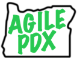
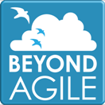
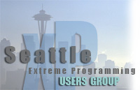
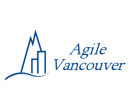

|
Northwest Agile Groups
The Pacific Nortwest is home to a large number of agile user groups.
These groups help make our area a strong center of agile software development
and provide a solid base of attendance and support to Agile Open Northwest.
We are providing this listing of agile user groups in the Pacific Northwest
so that you can connect with people interested in agile software development
after Agile Open Northwest. These groups meet for face-to-face discussions
on a regular basis to share experiences and learn from each other.
If we have missed any groups that should be listed here, please let us know.
|

|
Join the AgilePDX user group as we create a vibrant,
successful Agile community of practice that shares real-world experience, distilled
wisdom, and ideas for Agile done well. We welcome practitioners of any methods/practices
consistent with the Agile Manifesto or evolving from it. AgilePDX members meet four
different times a month at different locations around the area. We meet the third
Wednesday of each month for an evening speaker/topic meeting downtown, as well as a
meeting on the first Friday downtown at lunchtime; the second Tuesday before work on
the westside, and a westside afternoon meeting for managers. Find meeting
announcements on calagator.org, AgilePDX
yahoo group mailing list, and our website. Agile PDX envisions
Portland as a world class leader in profitable, sustainable, and joyful software development
– and we will help shape that future.
|
|

|
BeyondAgile is a Puget Sound-area
user group for people using Agile and Lean practices to improve software and business, people
who want to share and learn about the latest ideas for better software development and delivery.
The group meets on the 4th Wednesday of the month in Seattle, except in December, July, and August.
|
|

|
The Seattle XP Users Group
is a group of Seattle area programmers focused on Extreme Programming
as well as other agile methodologies. The group has not met regularly
for some time but continues to maintain a web site at
www.seattlexp.org and a
mailing list
on Yahoo.
|
|

|
Agile Vancouver is a local interest group in agile software development
methods in the Vancouver area. They host lively regular
meetings and maintain a website at
http://agilevancouver.ca.
|
|